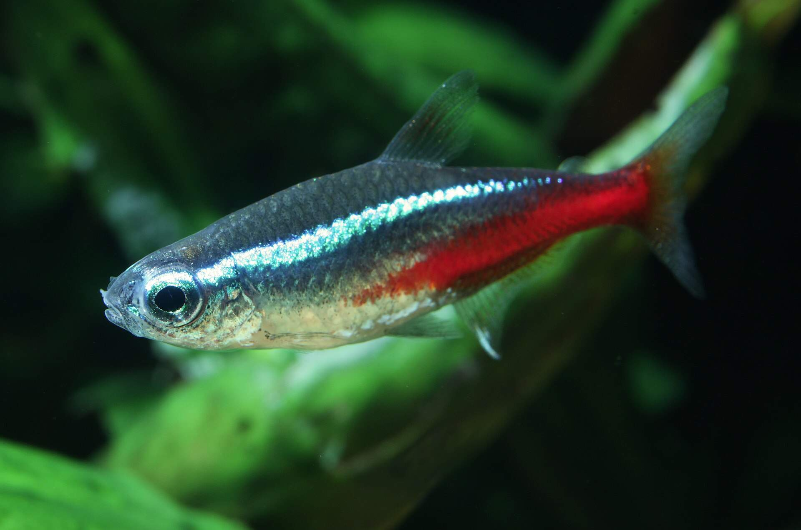
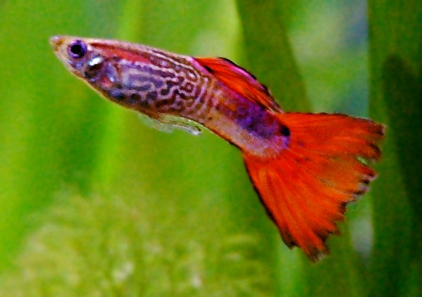
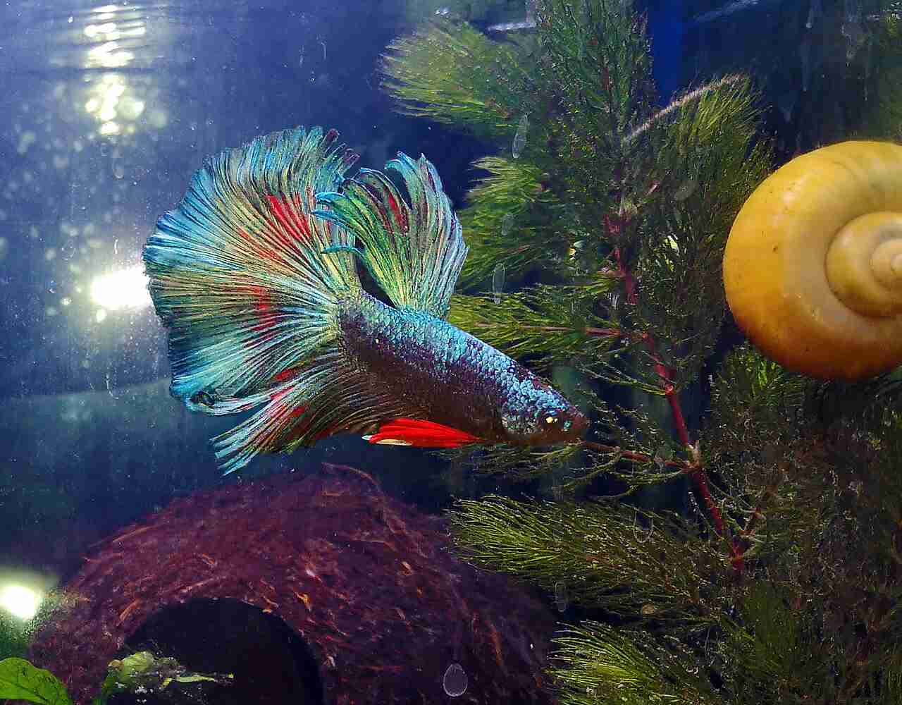

Dados Técnicos Precisos
Cada espécie traz pH ideal, temperatura, tamanho adulto e temperamento para auxiliar na sua escolha.
O AquaGuide reúne espécies de água doce com informações detalhadas sobre pH, temperamento e tamanho — tudo para você montar um aquário harmonioso.
Ferramentas simples e informações confiáveis para aquaristas iniciantes e experientes.
Cada espécie traz pH ideal, temperatura, tamanho adulto e temperamento para auxiliar na sua escolha.
Filtre peixes instantaneamente por tamanho, temperamento ou faixa de pH compatível com seu aquário.
Salve suas espécies preferidas. Seus favoritos são armazenados localmente e persistem entre sessões.
Consulte o catálogo do celular enquanto estiver na loja de aquarismo — interface otimizada para mobile.
Peixes perfeitos para quem está começando no aquarismo de água doce.

⭐ Popular
🔰 Ideal p/ Iniciantes
👑 MajestosoEm três passos, encontre os peixes certos para o seu aquário.
Navegue pelas espécies cadastradas com fotos, descrições e parâmetros técnicos detalhados.
Filtre por tamanho, temperamento (comunitário, semi-agressivo ou agressivo) e faixa de pH.
Marque os peixes que te interessam e acesse sua lista de favoritos a qualquer momento, mesmo offline.